Allan Peter Engsig-Karup
Professor (Assoc) in Computational Mathematics / Scientific Machine learning
Section for Scientific Computing
, Department of Applied Mathematics and Computer Science,
Section for Scientitic Computing,
DTU Compute,
Technical University of Denmark.
Research interests:
- Mathematical-Physical Modelling
- Scientific Computing
- High-Performance Computing
- Scientific Machine Learning
- Software Engineering
- Natural language processing (NLP) for Human-Device interfaces enabling Virtual Assistants / Agents


Research overview
- Advance and use modern scientific computing for simulation in areas of engineering applications.
- Advance and use modern data-driven methods / algorithms for predictive and generative tasks of relevance in areas of science and engineering.
- Develop and implement modern state-of-the-art numerical methods / linear algebra for massively parallel high-performance / cloud computing / super computing on modern many-core hardware systems.
- Use large language models from areas of natural language processing for human-device interfaces to design workflows that enable virtual assistants and agents.
Scientific Computing
Scientific computing for simulation, uncertainty quantification, and high-performance computing:- Mathematical-Physical Modelling
- Advanced Numerical Methods
- Multigrid Methods for Solving Large Systems of Equations
- Massively Parallel CPU-GPU Acceleration
- Computational Fluid Dynamics
- Uncertainty Quantification
- Spread of Disease Modelling
- Marine hydrodynamics
- Computational Fluid Dynamics
- Room Acoustics
- Railway vehicle Dynamics
- Reservoir Simulation
Scientific Machine Learning
Data-driven methods / algorithms for efficient modelling:- High-dimensional Function Approximation
- Reduced Order Modelling
- Neural Operators
- Physics-Informed Neural Networks
- Physics-Informed Holomorphic Neural Networks
- Multi-fidelity Methods
- Generalised Residual Networks
- Surrogate Modelling
- Neural Ordinary/Partial Differential Equations
Publications (selected highlights)
Published collaborative research works are listed here.| 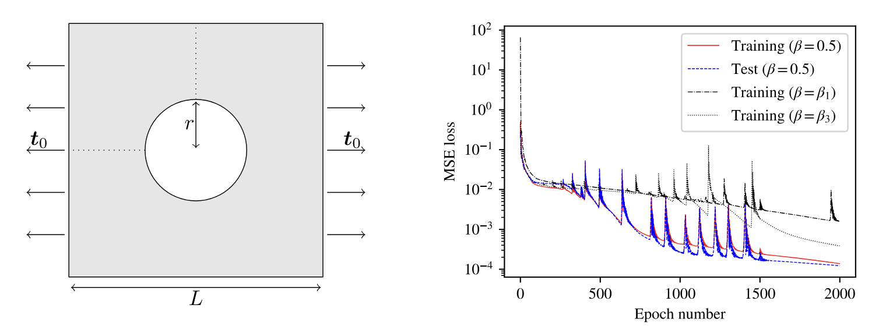 |
Physics-Informed Holomorphic Neural Networks (PIHNNs): Solving Linear Elasticity Problems
We propose physics-informed holomorphic neural networks (PIHNNs) as a method to solve boundary value problems where the solution can be represented via holomorphic functions. Specifically, we consider the case of plane linear elasticity and, by leveraging the Kolosov-Muskhelishvili representation of the solution in terms of holomorphic potentials, we train a complex-valued neural network to fulfill stress and displacement boundary conditions while automatically satisfying the governing equations. This is achieved by designing the network to return only approximations that inherently satisfy the Cauchy-Riemann conditions through specific choices of layers and activation functions. To ensure generality, we provide a universal approximation theorem guaranteeing that, under basic assumptions, the proposed holomorphic neural networks can approximate any holomorphic function. Furthermore, we suggest a new tailored weight initialization technique to mitigate the issue of vanishing/exploding gradients. Compared to the standard PINN approach, noteworthy benefits of the proposed method for the linear elasticity problem include a more efficient training, as evaluations are needed solely on the boundary of the domain, lower memory requirements, due to the reduced number of training points, and C∞ regularity of the learned solution. Several benchmark examples are used to verify the correctness of the obtained PIHNN approximations, the substantial benefits over traditional PINNs, and the possibility to deal with non-trivial, multiply-connected geometries via a domain-decomposition strategy. Matteo Calafa, Emil Hovad, Allan P. Engsig-Karup, Tito AndriolloArxiv preprint, 2024 Link to paper |

|
Data-driven Multi-Fidelity Modelling for Time-dependent Partial Differential Equations using Convolutional Neural Networks
We present a general multi-fidelity (MF) framework which is applied through utilizing flexible-order explicit finite difference numerical schemes using convolutional neural networks (CNNs) by combining low-order simulation data with higher order simulation data obtained from numerical simulations based on partial differential equations (PDEs). This allows for improving the performance of low-order numerical simulation through learning from the data how to correct the numerical schemes to achieve improved accuracy. Through the lens of numerical analysis we evaluate the accuracy, efficiency and generalizability of constructed data-driven MF-models. To illustrate the concept, the construction of the MF models uses CNNs and is evaluated for numerical schemes designed for solving linear PDEs; the heat, the linear advection equation and linearized 1D shallow water equations. The numerical schemes allow for a high level of explainability of data-driven correction terms obtained via CNNs through numerical analysis of truncation errors. It is demonstrated that data-driven MF models is a means to improve the accuracy of LF models through operator correction. Freja Petersen, Allan P. Engsig-KarupICLR, 2024 Link to paper |
| 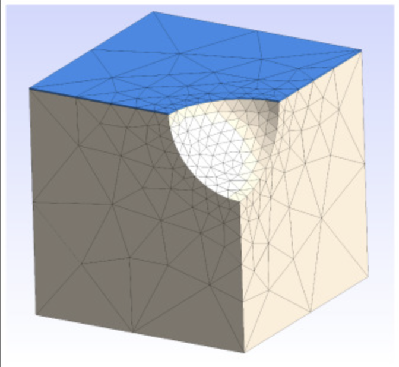 |
Solving the complete pseudo-impulsive radiation and diffraction problem using a spectral element method
This paper presents a novel, efficient, high-order accurate, and stable spectral element-based model for computing the complete three-dimensional linear radiation and diffraction problem for floating offshore structures. We present a solution to a pseudo-impulsive formulation in the time domain, where the frequency-dependent quantities, such as added mass, radiation damping, and wave excitation force for arbitrary heading angle, , are evaluated using Fourier transforms from the tailored time-domain responses. The spatial domain is tessellated by an unstructured high-order hybrid configured mesh and with solutions represented by piece-wise polynomial basis functions in the spectral element space. Fourth-order accurate time integration is employed, making the entire numerical scheme a high-order scheme. The model can use symmetry boundaries in the spatial representation to reduce the computational burden. The key piece of the numerical model – the discrete Laplace solver – is verified through - and -convergence studies. Moreover, to highlight the capabilities of the proposed model, we present proof-of-concept examples of simple floating bodies (a hemisphere and a box). Also, an oscillating water column is considered, including generalized modes representing the piston motion and wave sloshing effects inside the wave energy converter chamber. In this case, the spectral element model trivially computes the infinite-frequency added mass, which is a singular problem for conventional boundary element-type solvers. The proposed model serves its practical purpose within the field of offshore engineering for simulations of floating offshore wind turbines, wave energy converters, and much more. Jens Visbech, Allan P. Engsig-Karup, Harry BinghamCMAME, 2024 Link to paper |
| 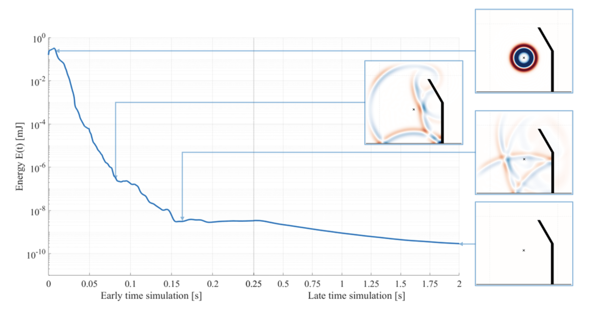 |
A stable decoupled perfectly matched layer for the 3D wave equation using the nodal discontinuous Galerkin method
In outdoor acoustics, the calculations of sound propagating in air can be computationally heavy if the domain is chosen large enough to fulfil the Sommerfeld radiation condition. By strategically truncating the computational domain with a efficient boundary treatment, the computational cost is lowered. One commonly used boundary treatment is the perfectly matched layer (PML) that dampens outgoing waves without polluting the computed solution in the inner domain. The purpose of this study is to propose and assess a new perfectly matched layer formulation for the 3D acoustic wave equation, using the nodal discontinuous Galerkin finite element method. The formulation is based on an efficient PML formulation that can be decoupled to further increase the computational efficiency and guarantee stability without sacrificing accuracy. This decoupled PML formulation is demonstrated to be long-time stable and an optimization procedure of the damping functions is proposed to enhance the performance of the formulation. Sophia Julia Feriani, Matthias Cosnefroy, Allan P. Engsig-Karup, Tim Warburton, Finnur Pind, Cheol-Ho JeongArxiv preprint, 2024 Link to paper |
| 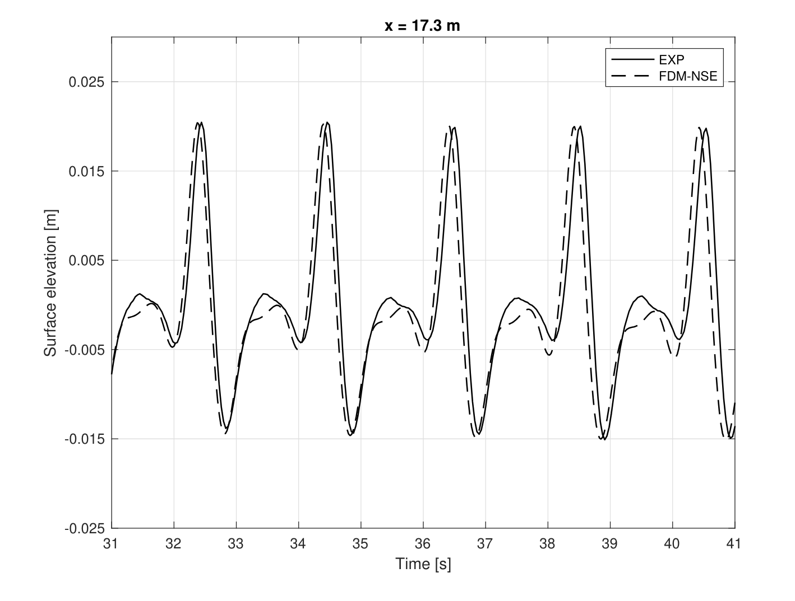 |
A High-Order Finite Difference Incompressible
Navier-Stokes model for Water Waves and
Wave-Structure Interaction
We propose a new high-order finite difference numerical model for the simulation of nonlinear water waves and wave-structure interaction with fixed structures using the Navier-Stokes equations. The complete formulation is described in three spatial dimensions (3D) and preliminary validation results are here presented for two spatial dimensions (2D). A spatially fixed computational domain is defined through introducing a sigma-coordinate that transform the Navier–Stokes equations along the vertical dimension from the sea bed to the still water level. Numerical experiments highlights both the correctness of the solution, the high-order convergence property that is attractive for efficient solutions as well as the classical benchmark problem due to Beji & Battjes (1994) where experimental measurements are available and hence serve as validation of the new high-order numerical scheme. Allan P. Engsig-Karup, Anders MelanderIWWWFB, 2024 Link to paper |

|
Sound propagation in realistic interactive 3D scenes with parameterized sources using deep neural operators
We address the challenge of acoustic simulations in three-dimensional (3D) virtual rooms with parametric source positions, which have applications in virtual/augmented reality, game audio, and spatial computing. The wave equation can fully describe wave phenomena such as diffraction and interference. However, conventional numerical discretization methods are computationally expensive when simulating hundreds of source and receiver positions, making simulations with parametric source positions impractical. To overcome this limitation, we propose using deep operator networks to approximate linear wave-equation operators. This enables the rapid prediction of sound propagation in realistic 3D acoustic scenes with parametric source positions, achieving millisecond-scale computations. Nikolas Borrel-Jensen, Somdatta Goswami, Allan P. Engsig-Karup, George Em Karniadakis, Cheol-Ho JeongPNAS, 2024 Link to paper |

|
Accelerating hydrodynamic simulations of urban drainage systems with physics-guided machine learning
We propose and demonstrate a new approach for fast and accurate surrogate modelling of urban drainage system hydraulics based on physics-guided machine learning. The surrogates are trained against a limited set of simulation results from a hydrodynamic (HiFi) model. Our approach reduces simulation times by one to two orders of magnitude compared to a HiFi model. It is thus slower than e.g. conceptual hydrological models, but it enables simulations of water levels, flows and surcharges in all nodes and links of a drainage network and thus largely preserves the level of detail provided by HiFi models. Rocco Palmitessa, Morten Grum, Allan Peter Engsig-Karup, Roland LoweWater Research, 2022 Link to paper |
| 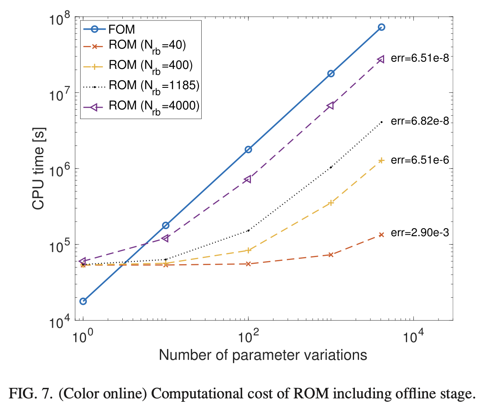 |
Reduced basis methods for numerical room acoustic simulations with parametrized boundaries
The use of model-based numerical simulations of wave propagation in rooms for engineering applications requires that acoustic conditions for multiple parameters are evaluated iteratively, which is computationally expensive. We present a reduced basis method (RBM) to achieve a computational cost reduction relative to a traditional full-order model (FOM) for wave-based room acoustic simulations with parametrized boundaries. The FOM solver is based on the spectral-element method; however, other numerical methods could be applied. The RBM reduces the computational burden by solving the problem in a low-dimensional subspace for parametrized frequency-independent and frequency-dependent boundary conditions. The problem is formulated in the Laplace domain, which ensures the stability of the reduced-order model (ROM). We study the potential of the proposed RBM in terms of computational efficiency, accuracy, and storage requirements, and we show that the RBM leads to 100-fold speedups for a two-dimensional case and 1000-fold speedups for a three-dimensional case with an upper frequency of 2 and 1 kHz, respectively. While the FOM simulations needed to construct the ROM are expensive, we demonstrate that the ROM has the potential of being 3 orders of magnitude faster than the FOM when four different boundary conditions are simulated per room surface. Hermes Sampedro Llopis , Allan Peter Engsig-Karup, Cheol-Ho Jeong, Finnur Pind, Jan S. HesthavenThe Journal of the Acoustic Society of America, 2022 Link to paper |
| 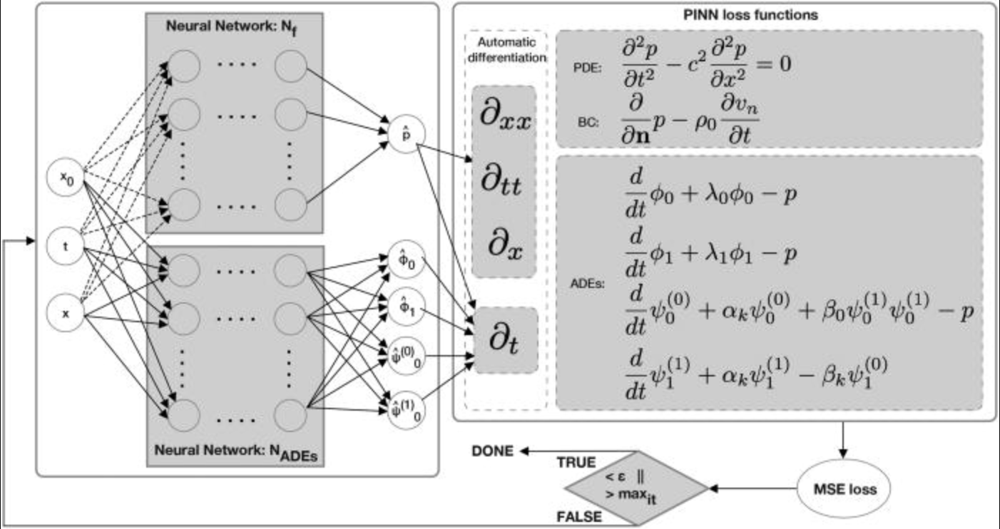 |
Physics-informed neural networks for one-dimensional sound field predictions with parameterized sources and impedance boundaries
Realistic sound is essential in virtual environments, such as computer games and mixed reality. Efficient and accurate numerical methods for pre-calculating acoustics have been developed over the last decade; however, pre-calculating acoustics makes handling dynamic scenes with moving sources challenging, requiring intractable memory storage. A physics-informed neural network (PINN) method in one dimension is presented, which learns a compact and efficient surrogate model with parameterized moving Gaussian sources and impedance boundaries and satisfies a system of coupled equations. The model shows relative mean errors below 2%/0.2 dB and proposes a first step in developing PINNs for realistic three-dimensional scenes. Nikolas Borrel-Jensen, Allan Peter Engsig-Karup, Cheol-Ho JeongJASA Express Lett., 2021 Link to paper |
| 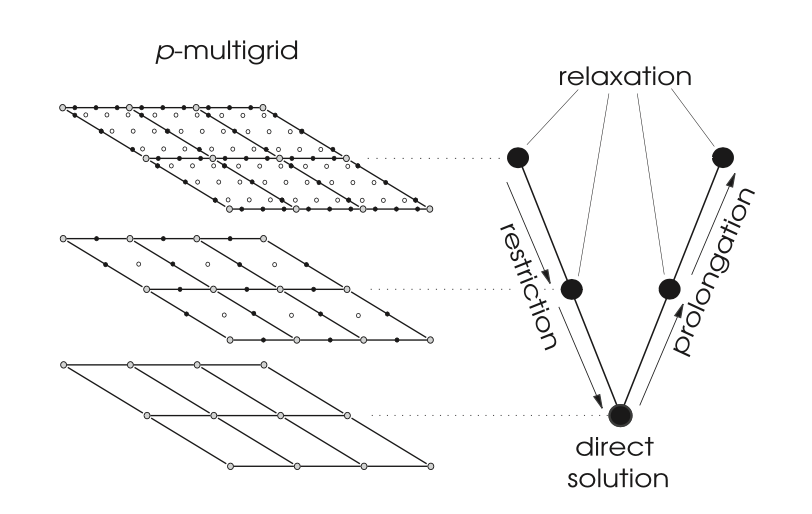 |
An efficient p-multigrid spectral element model for fully nonlinear water waves and fixed bodies
In marine offshore engineering, cost-efficient simulation of unsteady water waves and their nonlinear interaction with bodies are important to address a broad range of engineering applications at increasing fidelity and scale. We consider a fully nonlinear potential flow (FNPF) model discretized using a Galerkin spectral element method to serve as a basis for handling both wave propagation and wave-body interaction with high computational efficiency within a single modeling approach. We design and propose an efficient -scalable computational procedure based on geometric p-multigrid for solving the Laplace problem in the numerical scheme. The fluid volume and the geometric features of complex bodies is represented accurately using high-order polynomial basis functions and unstructured meshes with curvilinear prism elements. The new p-multigrid spectral element model can take advantage of the high-order polynomial basis and thereby avoid generating a hierarchy of geometric meshes with changing number of elements as required in geometric h-multigrid approaches. Allan Peter Engsig-Karup, Wojciech LaskowskiInternational Journal for Numerical Methods in Fluids, 2021 Link to paper |
| 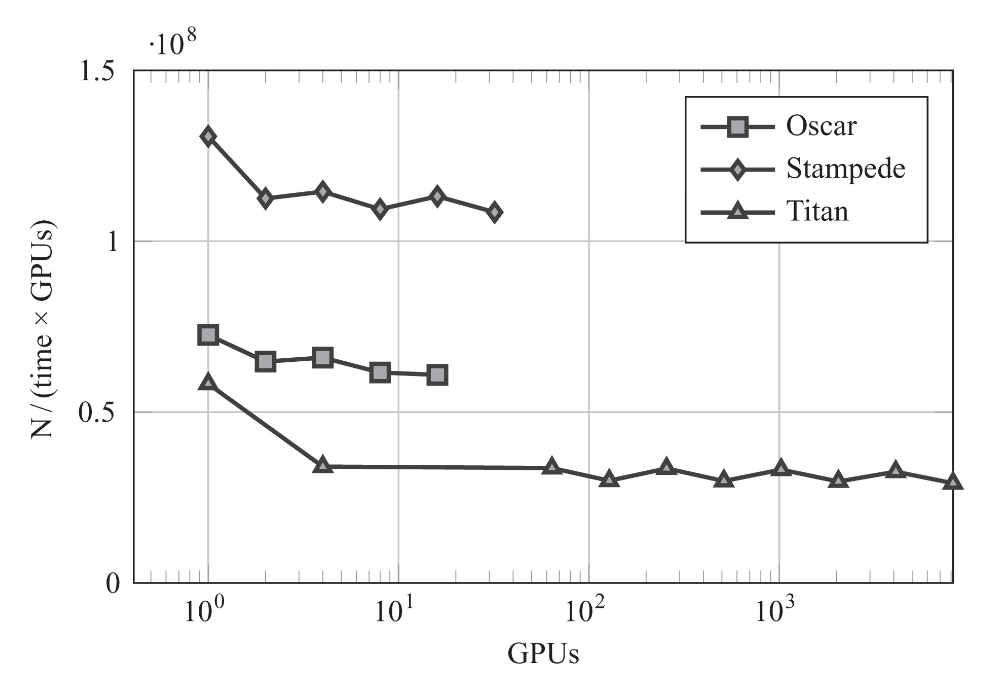 |
A massively scalable distributed multigrid framework for nonlinear marine hydrodynamics
The focus is on the parallel scalability of a distributed multigrid framework, known as the DTU Compute GPUlab Library, for execution on graphics processing unit (GPU)-accelerated supercomputers. We demonstrate near-ideal weak scalability for a high-order fully nonlinear potential flow (FNPF) time domain model on the Oak Ridge Titan supercomputer, which is equipped with a large number of many-core CPU-GPU nodes. The high-order finite difference scheme for the solver is implemented to expose data locality and scalability, and the linear Laplace solver is based on an iterative multilevel preconditioned defect correction method designed for high-throughput processing and massive parallelism. Stefan Lemvig Glimberg, Allan Peter Engsig-Karup, Luke N OlsonThe International Journal of High Performance Computing Applications, 2019 Link to paper |
| 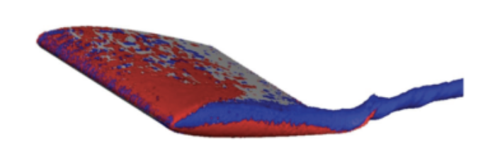 |
Spectral/hp element methods: Recent developments, applications, and perspectives
The spectral/hp element method combines the geometric flexibility of the classical h-type finite element technique with the desirable numerical properties of spectral methods, employing high-degree piecewise polynomial basis functions on coarse finite element-type meshes. The spatial approximation is based upon orthogonal polynomials, such as Legendre or Chebychev polynomials, modified to accommodate a C0 - continuous expansion. Computationally and theoretically, by increasing the polynomial order p, high-precision solutions and fast convergence can be obtained and, in particular, under certain regularity assumptions an exponential reduction in approximation error between numerical and exact solutions can be achieved. This method has now been applied in many simulation studies of both fundamental and practical engineering flows. This paper briefly describes the formulation of the spectral/hp element method and provides an overview of its application to computational fluid dynamics. In particular, it focuses on the use of the spectral/hp element method in transitional flows and ocean engineering. Finally, some of the major challenges to be overcome in order to use the spectral/hp element method in more complex science and engineering applications are discussed. Hui Xui, Chris D. Cantwell, Carlos Monteserin, Claes Eskilsson, Allan Peter Engsig-Karup, Spencer J. SherwinJournal of Hydrodynamics, 2018 Link to paper |

|
A stabilised nodal spectral element method for fully nonlinear water waves
We present an arbitrary-order spectral element method for general-purpose simulation of non-overturning water waves, described by fully nonlinear potential theory. The method can be viewed as a high-order extension of the classical finite element method proposed by Cai et al. (1998) , although the numerical implementation differs greatly. Features of the proposed spectral element method include: nodal Lagrange basis functions, a general quadrature-free approach and gradient recovery using global projections. The quartic nonlinear terms present in the Zakharov form of the free surface conditions can cause severe aliasing problems and consequently numerical instability for marginally resolved or very steep waves. We show how the scheme can be stabilised through a combination of over-integration of the Galerkin projections and a mild spectral filtering on a per element basis. This effectively removes any aliasing driven instabilities while retaining the high-order accuracy of the numerical scheme. The additional computational cost of the over-integration is found insignificant compared to the cost of solving the Laplace problem. Allan Peter Engsig-Karup, Claes Eskilsson, Daniele BigoniJournal of Computational Physics, 2016 Link to paper |
| 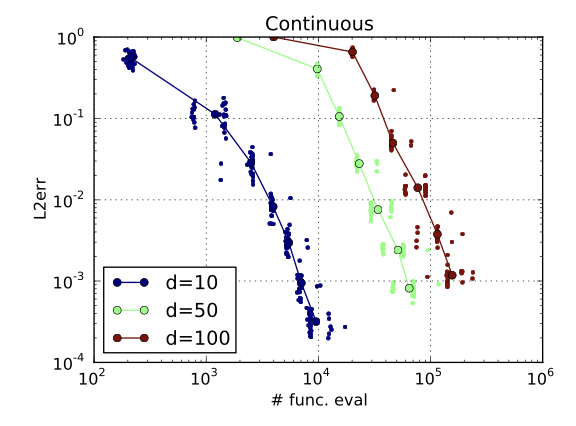 |
Spectral Tensor-Train Decomposition
The accurate approximation of high-dimensional functions is an essential task in uncertainty quantification and many other fields. We propose a new function approximation scheme based on a spectral extension of the tensor-train (TT) decomposition. We first define a functional version of the TT decomposition and analyze its properties. We obtain results on the convergence of the decomposition, revealing links between the regularity of the function, the dimension of the input space, and the TT ranks. We also show that the regularity of the target function is preserved by the univariate functions (i.e., the “cores'') comprising the functional TT decomposition. This result motivates an approximation scheme employing polynomial approximations of the cores. For functions with appropriate regularity, the resulting spectral tensor-train decomposition combines the favorable dimension-scaling of the TT decomposition with the spectral convergence rate of polynomial approximations, yielding efficient and accurate surrogates for high-dimensional functions. To construct these decompositions, we use the sampling algorithm TT-DMRG-cross to obtain the TT decomposition of tensors resulting from suitable discretizations of the target function. We assess the performance of the method on a range of numerical examples: a modified set of Genz functions with dimension up to 100, and functions with mixed Fourier modes or with local features. We observe significant improvements in performance over an anisotropic adaptive Smolyak approach. The method is also used to approximate the solution of an elliptic PDE with random input data. The open source software and examples presented in this work are available online (http://pypi.python.org/pypi/TensorToolbox/). Daniele Bigoni, Allan Peter Engsig-Karup, Youssef MarzoukSIAM Journal on Scientific Computing, 2016 Link to paper |
| 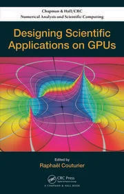 |
Fast Hydrodynamics on Heterogeneous Many-Core Hardware
In this chapter, we use our library for heterogeneous and massively parallel GPU implementations. The library is written in Compute Unified Device Architecture (CUDA) C/C++ and a fully nonlinear and dispersive free surface water wave model is implemented. We describe how flexible-order finite difference (stencil) approximations to the partial differential equations of the model can be prototyped using library components provided in an in-house library. In this library hardware-specific implementation details are hidden. Allan Peter Engsig-Karup, Stefan Lemvig Glimberg Allan S. Nielsen, Ole Lindberg, 2014 Link to book |
|
Development of Software Components for Heterogeneous Many-Core Architectures
Massively parallel processors, such as graphical processing units (GPUs), have in recent years proven to be effective for a vast amount of scientific applications. Today, most desktop computers are equipped with one or more powerful GPUs, offering heterogeneous high-performance computing to a broad range of scientific researchers and software developers. Though GPUs are now programmable and can be highly effective computing units, they still pose challenges for software developers to fully utilize their efficiency. Sequential legacy codes are not always easily parallelized, and the time spent on conversion might not pay off in the end. This is particular true for heterogeneous computers, where the architectural differences between the main and coprocessor can be so significant that they require completely different optimization strategies. The cache hierarchy management of CPUs and GPUs are an evident example hereof. In the past, industrial companies were able to boost application performance solely by upgrading their hardware systems, with an overt balance between investment and performance speedup. Today, the picture is different; not only do they have to invest in new hardware, but they also must account for the adaption and training of their software developers. What traditionally used to be a hardware problem, addressed by the chip manufacturers, has now become a software problem for application developers. Stefan Lemvig Glimberg Allan Peter Engsig-Karup, Allan S. Nielsen, Bernd Dammann, 2014 Link to book |
|

|
A massively parallel GPU-accelerated model for analysis of fully nonlinear free surface waves
We implement and evaluate a massively parallel and scalable algorithm based on a multigrid preconditioned Defect Correction method for the simulation of fully nonlinear free surface flows. A dedicated numerical model based on the proposed algorithm is executed in parallel by utilizing affordable modern special purpose graphics processing unit (GPU). We describe and demonstrate how this approach makes it possible to do fast desktop computations for large nonlinear wave problems in numerical wave tanks (NWTs) with close to 50/100 million total grid points in double/single precision with 4 GB global device memory available. A new code base has been developed in C++ and compute unified device architecture C and is found to improve the runtime more than an order in magnitude in double precision arithmetic for the same accuracy over an existing CPU (single thread) Fortran 90 code when executed on a single modern GPU. Allan Peter Engsig-Karup, Morten Gorm Madsen, Stefan Lemvig GlimbergInternational Journal for Numerical Methods in Fluids, 2011 Link to paper |
| 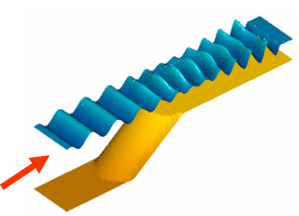 |
An efficient flexible-order model for 3D nonlinear water waves
The flexible-order, finite difference based fully nonlinear potential flow model described in Bingham and Zhang (2007) is extended to three dimensions (3D). In order to obtain an optimal scaling of the solution effort multigrid is employed to precondition a GMRES iterative solution of the discretized Laplace problem. A robust multigrid method based on Gauss–Seidel smoothing is found to require special treatment of the boundary conditions along solid boundaries, and in particular on the sea bottom. A new discretization scheme using one layer of grid points outside the fluid domain is presented and shown to provide convergent solutions over the full physical and discrete parameter space of interest. Linear analysis of the fundamental properties of the scheme with respect to accuracy, robustness and energy conservation are presented together with demonstrations of grid independent iteration count and optimal scaling of the solution effort. Calculations are made for 3D nonlinear wave problems for steep nonlinear waves and a shoaling problem which show good agreement with experimental measurements and other calculations from the literature. The open source software developed in Fortran 90 by Allan Peter Engsig-Karup and examples presented in this work are available online (https://github.com/apengsigkarup/OceanWave3D-Fortran90). Allan Peter Engsig-Karup, Harry B. Bingham, Ole LindbergJournal of Computational Physics, 2009 Link to paper |